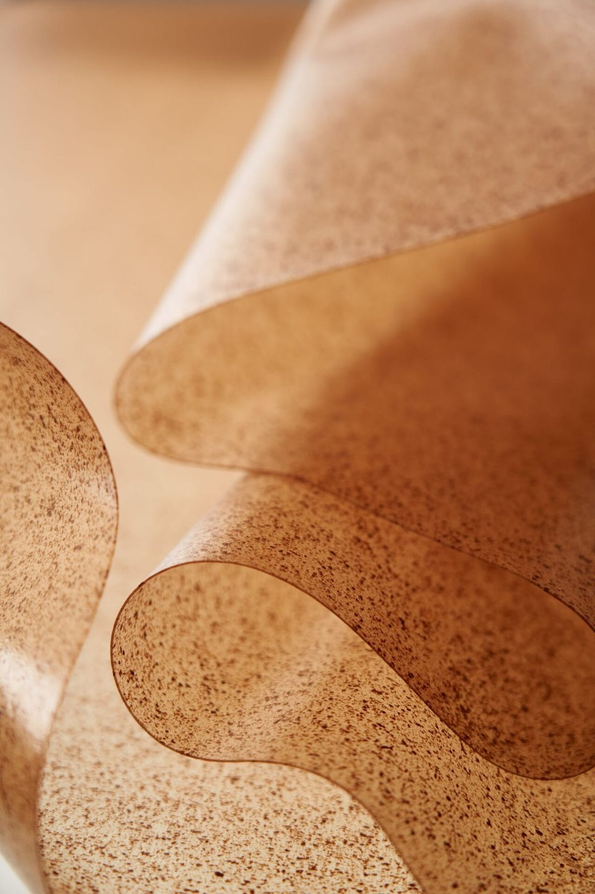
What exactly is the allure of biomaterials? Throughout my upbringing, I have always been captivated by the distinct tactile interactions that different materials bring to products. Giant kelp (*Macrocystis pyrifera*) is currently one of the most frequently explored materials within the realm of innovative biomaterials. Once largely overlooked—left merely to rot—it is now being transformed. By employing novel manufacturing processes and computational design tools, I have created a lighting fixture that showcases the immense potential of this emerging craft. The design of the fixture draws inspiration from the inherent pliability of the material itself, capturing the unique interactive beauty that these shifting folds and creases impart to the piece.
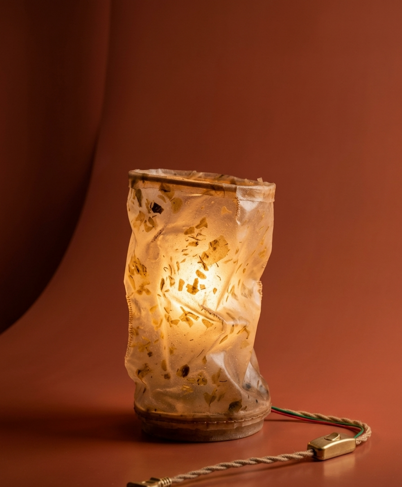
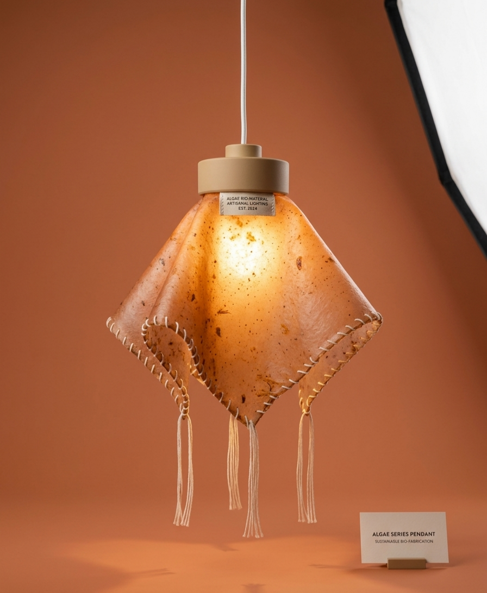
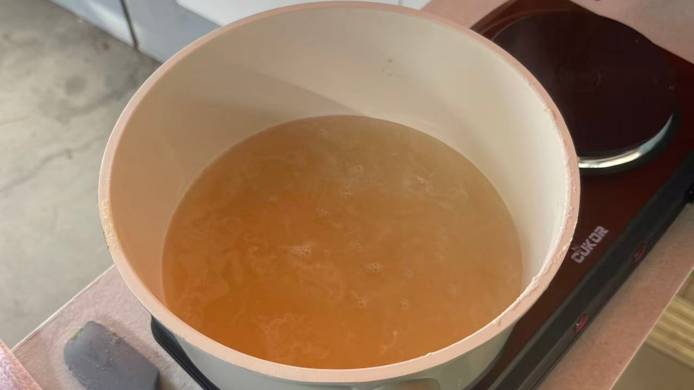
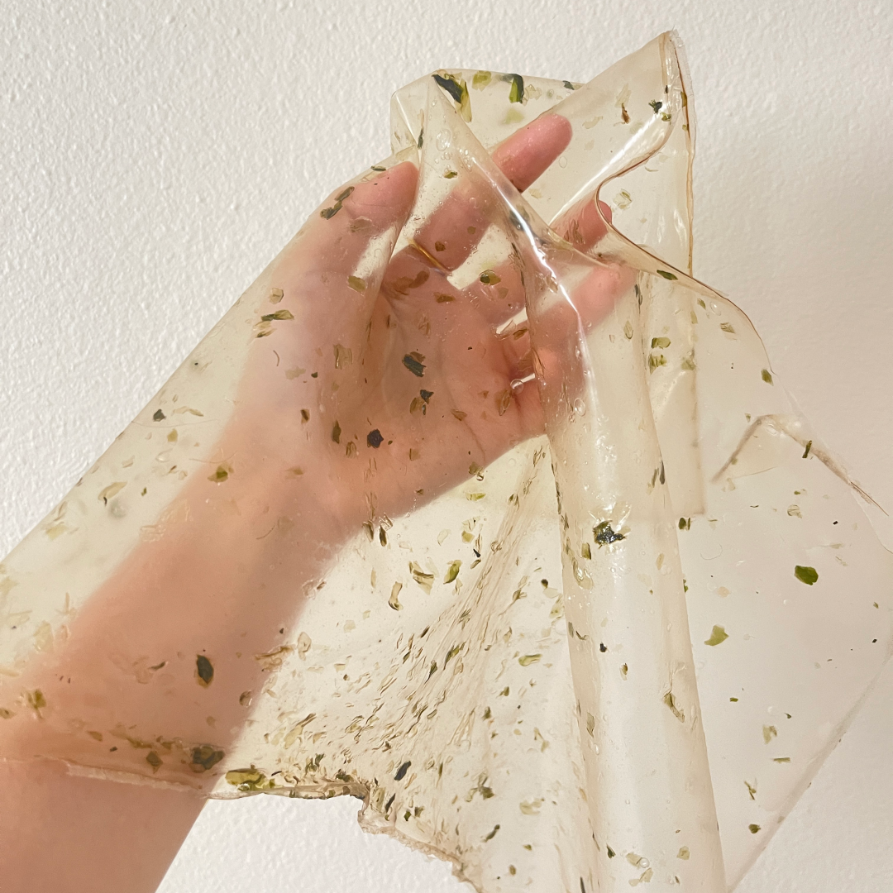
The lamps use algae extract, glycerin, and water as the base materials. They are hand-mixed and cast into thin films, then naturally air‑dried and low‑temperature dried. The films are shaped by hand‑pressing to form this translucent piece of bio‑leather. Every fine texture and speck on the surface is a mark left by the algae itself. The edges are hand‑stitched, one stitch at a time, with cotton thread, and 3D‑printed components are used as structural supports. When the light is turned on, the warm glow diffuses gently through the bio‑leather, natural, restrained, and full of warmth..
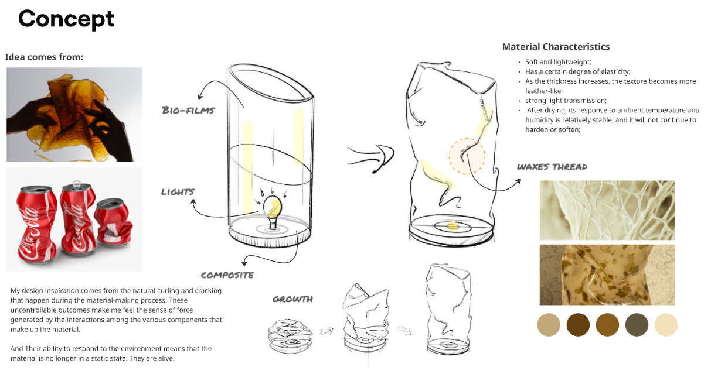
Using RHINO to construct a white membrane model, the design simulates the formal variations created by soft leather and emphasizes the potential to transform the mystery and wildness of nature into refined design works. Throughout the design and production process of this lighting fixture, the tactile quality of the materials served as the primary guiding principle. My aim was to create a product with a profoundly tactile appeal—one that fully showcases the inherent, rugged texture of the organic materials themselves. By incorporating handcrafted elements—specifically cotton and waxed threads—I sought to imbue the fixture with a sense of warmth and human touch.
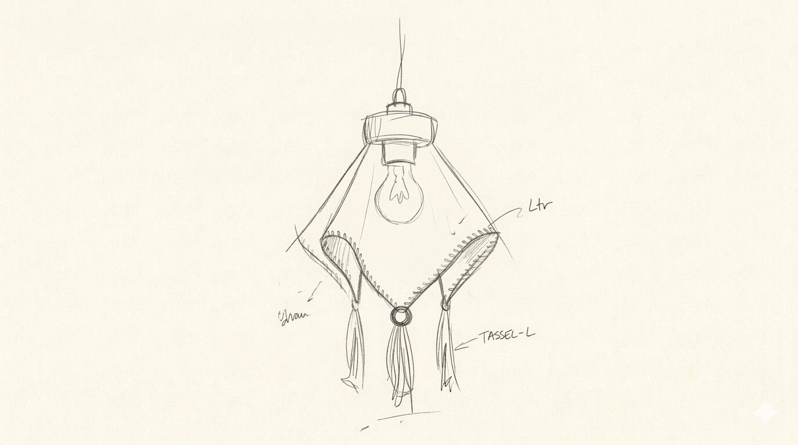
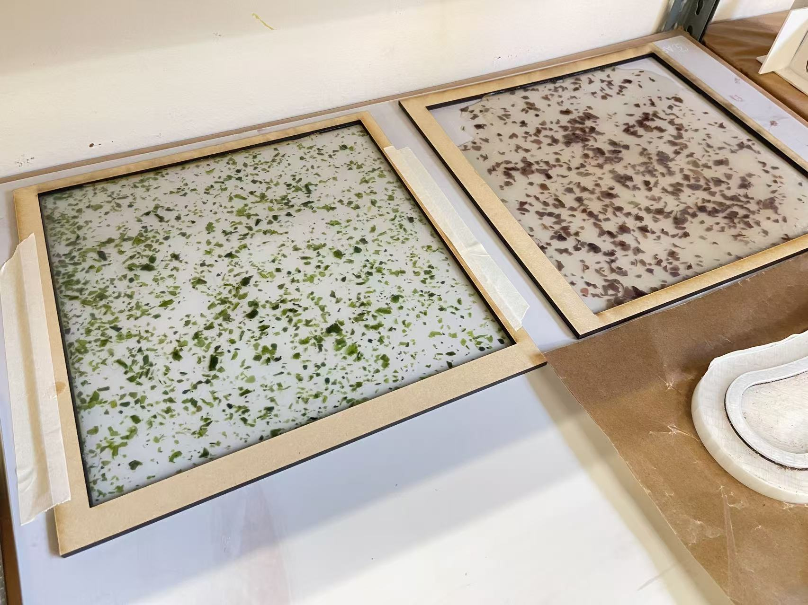
Using different ratios of glycerin and algae-based materials, bioplastics with various properties were produced. Strength tests were conducted on the different material samples, and ultimately the formulation with a glycerin-to-algae-based material ratio of 2:3 was selected as the primary material for the lamp.
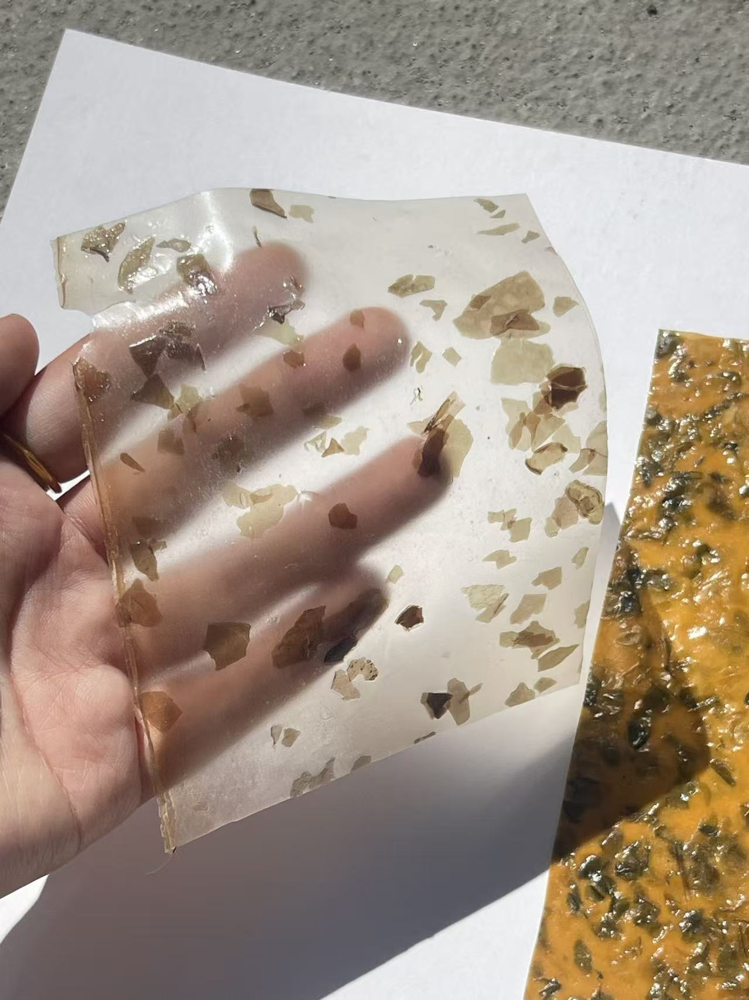
Samples with different thicknesses and colors were produced to compare the interaction between the material and the light. At the same time, the varying thicknesses of the biobased material revealed different levels of material strength, providing a basis for its later combination with other materials.
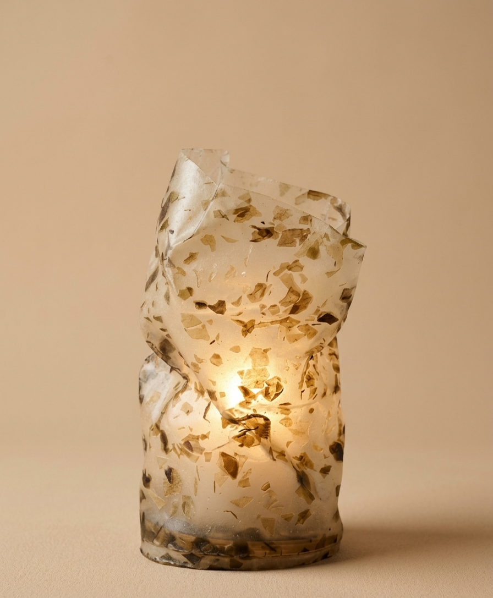
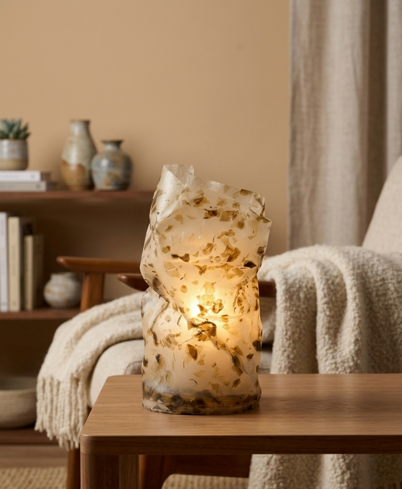
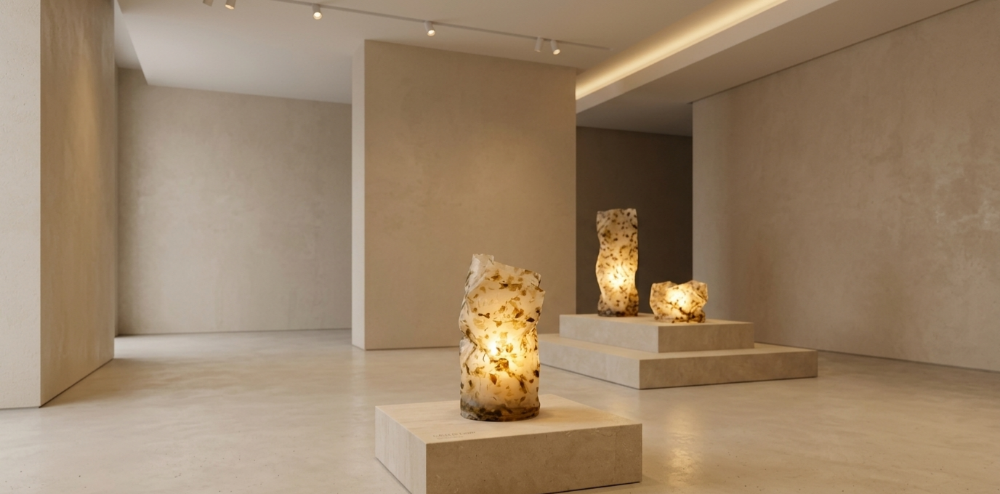
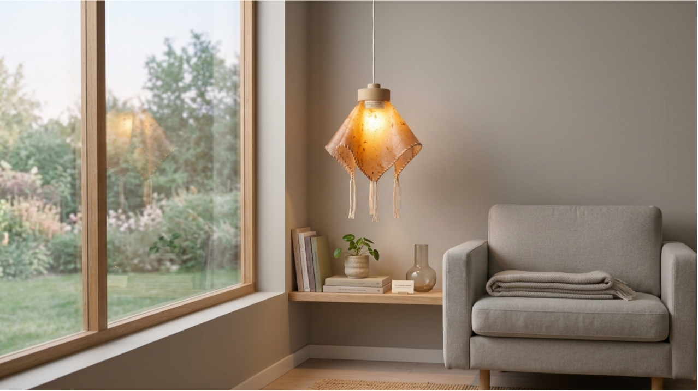
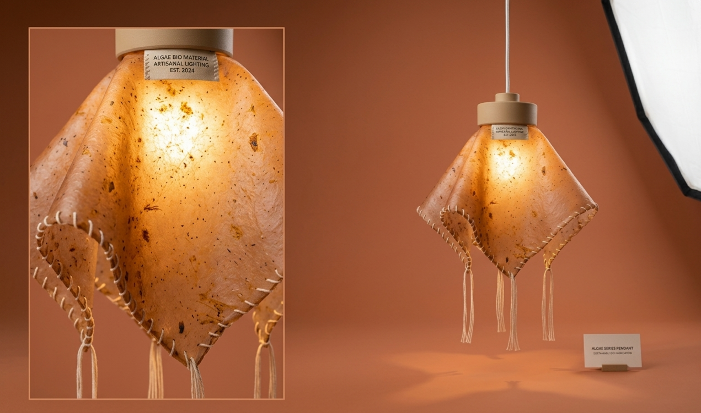